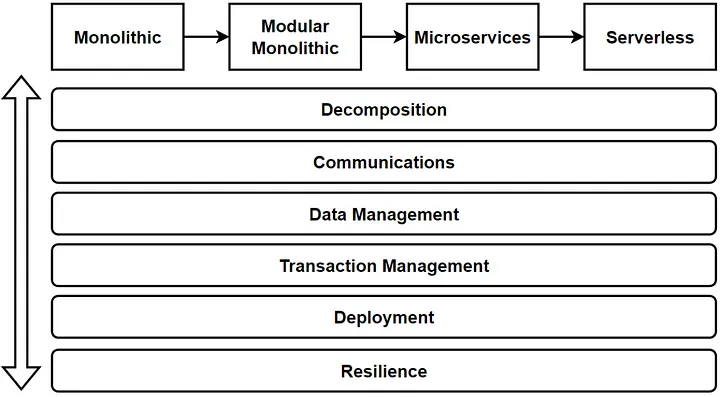

Microservices Checklist — Cover All Aspects of Microservices Architecture
We are going to learn our Microservices Checklist and cover All Aspects with exploring vertical topics of Microservices Architecture.

Vertical Considerations
Before design any architecture, we should evaluate and verify some vertical topics and question to our architecture in order to make sure that we have calculated every tradeoffs and risks at acceptable level for your project.
Software Architecture Design
Software architecture is always a balancing act between trade-offs and compromises. There is no single design or architecture that is perfect for every situation. Instead, software architects must carefully consider the trade-offs and make decisions based on the specific requirements, constraints, and goals of the software system.
For example, a monolithic architecture may be simpler and easier to manage, but it may not scale well as the system grows. On the other hand, a microservices-based architecture may provide greater scalability and flexibility, but it may be more complex and difficult to manage. In the previous article, you can read the Evolution of Architectures; Monolithic, Microservices and Serverless.
The key point is that there is no single “best” solution for software architecture, and software architects must constantly make trade-offs and compromises based on the specific requirements, constraints, and goals of the system. The goal is to find the right balance that meets the needs of the system and the stakeholders.
So to verify any architecture, we should think every aspects of design and make sure that cover all different angle of the design. During this article, we will discuss which vertical considerations could be think when we design microservices architecture.
Microservices Building Blocks
We can start to discuss Vertical Considerations of microservices architectures. These are:
- Microservices Decomposition — Breaking Down Microservices
- Microservices Communications (Sync / Async Message-Based Communication, API Gws)
- Microservices Data Management (Databases / Query / Commands)
- Microservices Transaction Management
- Microservices Distributed Caching
- Microservices Deployments with Containers and Orchestrators
- Microservices Resilience with Distributed Logging, Tracing and Health
- Microservices Testing; Contract Testing, Integration Testing, E2E Test
- Microservices Security; Authentication and Authorization
with applying microservices design patterns and practices.

Vertical Considerations
According to this image, we can evaluate and verify any architecture with checking all these vertical considerations.
Microservices Building Blocks — Sub Components
Now we can go one more level to identify and check sub components of building blocks. Here you can reach the sub components of these Microservices Building Blocks:
Microservices Decomposition — Breaking Down Microservices:
- DDD — Bounded Context
- Business Capabilities
Microservices Communications:
- Synchronous Communication
- Asynchronous Communication
- Poll-Based Communications
So in this building block, we should also go one more deep level and identify consideration topics as bellowed:
Microservices Synchronous Communication
- Sync Communication Types: REST / gRPC / GraphQL / WebSocket
- API Gateway Requirements: Discovery, Registry, Route, Aggregation, Composition, Authentication
- Service-to-service Integration Considerations : Backend Microservices / 3rd party calls / B2B Gateways / IoT Devices
- Headless Architecture Decisions: Micro-frontend designs, Edge Functions
Microservices Asynchronous Communication
- Async Com Types: 1–1 / 1-many (point-to-point / publish-subscribe)
- Async Com Way: Fire&Forget / Callback
- Async Tools: Message Broker / Event Bus / Queue / DLQ
- Async Patterns: Pub-Sub / Fanout / Topic Queue Chain / Event Filters / Rule Engine
- EDA Design Considerations: Event Backbone / Event Queue Topic Design / Real-time Event Streams / Event Filters, Routers, Deserializers / Event Stores
Lets continue with other sub components of Microservices Building Blocks.
Microservices Data Management (Databases / Query / Commands)
- Database Chooses
- Queries
- Commands — Consistency
- Distributed Transactions
- Caching
So in this building block, we should also go one more deep level and identify consideration topics as bellowed:
Database Chooses
- DB Types : Relational / NoSQL — Document, Key/Value, Wide Column, Graph, Time Series, DWH
- DB Scale Options : Master-Slave/ Masterless, Replication, Sharding, Read/Write
- DB Capabilities: CDC / Streaming / Sharding / K8s Management DBs / DWH Reporting / Big Data Analysis / AI/ML model processing
Queries
- API Gateway / Composition / Aggregation / BFF
- CQRS / Materialized View / Event Sourcing / Read Database
- Analytics/AI-ML/Reporting/Real-time stream analysis and processing / Big Data Analysis
Commands — Consistency
- Consistency: Strict / Eventual Consistency
- CQRS / Write Database / ACID / Event Sourcing / Repayable Snapshot / Single source of truth
Microservices Distributed Transactions
- Transaction Management: 2PC / SAGA (Orchestrator / Choreography )
- Outbox / Dual Write / Change Data Capture / Message Broker Event Bus / read-after-write consistency
- MS Design : Idempotency / Stateless / Immutable events
Microservices Distributed Caching
- Cache Type: Static Content (CDN) / In-memory / Distributed
- Cache Settings: Cache Expire / TTL / Hit — Miss — Invalidation
Lets continue with other sub components of Microservices Building Blocks.
Microservices Deployments with Containers and Orchestrators
- IaC
- Devops CI/CD
- Network Management
So in this building block, we should also go one more deep level and identify consideration topics as bellowed:
IaC
- Multi-Cloud Deployments — EKS, AKS, GKS
- PaaS, Managed K8s (Openshift), Databases (k8cassandra, ksql), EventBus (Confluence Kafka), Api Gw
- Serverless options, FAAS, Serverless and Edge Functions, CDN
Devops CI/CD
- Deployments: Containers, Orchestrators, Serverless options, Frameworks: Openshift
- Pipeline Steps, Automation, Devops tools
- Package Management: Helm Charts, Artifactory Hubs, Re-usable container registry
- Deployment Strategy: Blue/Green, Canary, Recreate
- Configurations : Config Server, Encryption, Key Vault Management
Network Management
- Load Balancing, Ingress, CDN, DNS Management, Cluster Management, Disaster recovery
Lets continue with other sub components of Microservices Building Blocks.
Microservices Resilience
- Observability / Logging
- Monitoring
- Tracing
- Resilient / Fault Tolerance
So in this building block, we should also go one more deep level and identify consideration topics as bellowed:
Observability / Logging
- Centralized Logging, Distributed Logging, Dashboards, ELK Stack
- Log Id per Request, Service App Logs, Integration Logs
Monitoring
- System Monitoring: CPU, Ram
- Application Monitoring: Queue Count, unprocessed messages
- Health Checks : Microservices, Databases, Brokers Event Buses, 3rd party systems
Tracing
- Distributed Transactions, Transaction Id, Correlation Id, E2E Request Id, Event Id
- OpenTelemetry Compliance: Jeager, Zipkin
Resilient / Fault Tolerance
- API Call Management : Retry, Circuit Breaker, Bulkhead, Rate limiting, Fault Tolerant
- Kubernetes Patterns & Best Practices : Sidecar, Service Mesh, Service Proxy
- Async Fault Alarms: DLQ, Notifications, Alarms
Lets continue with other sub components of Microservices Building Blocks.
Microservices Testing; Contract Testing, Integration Testing, E2E Test
- Pre-Deployment Test : Unit / Integration / Contract Test
- Post-Deployment Test : E2E SIT Test / Consumer-Driven Test / Chaos Test
Microservices Security; Authentication and Authorization
- Authentication
- Identity Servers: Managed (IS4, Keycloak) and Serverless options (Cognito)
- Protocols: OAuth2.0 , OpenIDConnect flows
- Token Types and Claims
- Authorization
- API Gw Authentication flows, Claim based authorizations, RBAC
- Configurations
- Encryption, Key Vault Management
- SSL and TLS, Firewalls
- Audit Logs
Conclusion
These are created from our team when we design and iterate microservices into our cloud-native enterprise applications and projects. So if you have additional consideration feel free to extend this list with adding new considerations regarding to microservices.